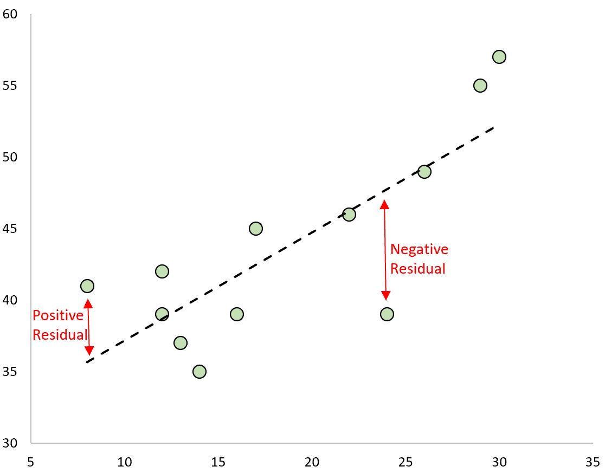

In the last lesson, we discussed the OLS estimator for linear regressions. But we have to ask ourselves - is OLS a good estimator? Why should we use OLS? In this lesson, we focus on the properties of OLS, and the conditions under which OLS is a good estimator.
This lesson covers the following topics:
- Some simple algebraic properties of our best-fit plane through OLS estimation.
- The conditions on which OLS estimation is an unbiased estimator for multiple regression (Gauss-Markov conditions), and how violations of these conditions will lead to biased estimates.
- How OLS is asymptotically consistent with a large sample size, and how that allows us to weaken one of the unbiasedness conditions.
- How OLS is also the best approximation of the conditional expectation function.
2.3.1: Residuals and Properties of OLS Estimator
Once we have our OLS estimates \hat\beta_0 and \hat\beta_1 in simple linear regression, we can obtain both our fitted values, and the OLS residuals \hat u_i:
\begin{split} \hat u_i & = y_i - \hat y_i \\ & = y_i - \hat\beta_0 - \hat\beta_1 x_i \end{split}
The figure below shows what a residual for a point looks like: the distance between the best fit line.

The same applies to the residuals of multiple regression, with the addition of more parameters:
\begin{split}\hat u_i & = y_i - \hat y_i \\& = y_i - (\hat \beta_0 + \hat\beta_1x_{1i} + \dots + \hat\beta_k x_{ki}) \\& = y_i - \hat \beta_0 - \hat\beta_1x_{1i} - \dots - \hat\beta_k x_{ki}\end{split}
Recall that the OLS estimates \hat\beta_0 and \hat\beta_1 are chosen to satisfy the following first order conditions for simple linear regression (see 2.2.2):
\begin{split} & \sum\limits_{i=1}^n (y_i - \hat{\beta}_0 - \hat{\beta}_1 x_i) = 0 \\ & \sum\limits_{i=1}^n x_i (y_i - \hat{\beta}_0 - \hat{\beta}_1 x_i) = 0 \end{split}
For multiple regression OLS estimates of \hat\beta_0 , \dots \hat\beta_k are chosen to satisfy the following first order conditions (see 2.2.4):
\begin{split}& \sum\limits_{i=1}^n (y_i - \hat{\beta}_0 - \hat{\beta}_1x_{1i} - \hat{\beta}_2x_{2i}...) = 0 \\& \sum\limits_{i=1}^n x_{1i}(y_i - \hat{\beta}_0 - \hat{\beta}_1x_{1i} - \hat{\beta}_2x_{2i}...) = 0 \\ & \sum\limits_{i=1}^n x_{2i} (y_i - \hat{\beta}_0 - \hat{\beta}_1x_{1i} - \hat{\beta}_2x_{2i}...) = 0 \end{split}
- and so on for x_{3i}, ..., x_{ki}.
Using these properties, we can plug in \hat u_i from above to get the above conditions:
\begin{split} & \sum\limits_{i=1}^n \hat u_i = 0 \\ & \sum\limits_{i=1}^n x_{ji} \hat u_i = 0 \end{split}
- Where x_j is just x in simple linear regression, and x_j is any x_1, \dots, x_k in multiple linear regression
We can use these conditions to obtain a few properties about the OLS best-fit line.
Property 1: Sum of Residuals is 0
OLS residuals always add up to zero (for both simple and multiple regression), since:
\sum\limits_{i=1}^n \hat u_i = 0
This property ensures that the average value of y_i in our data is the same as the average value of our predictions \hat y_i.
Property 2: No Covariance Between x and Residual.
From above, we know the following to be true:
\sum\limits_{i=1}^n \hat u_i = 0
Which also means that \bar{\hat u} = 0 (since an average is just the sum divided by the number of observations, and the sum is equal to 0).
We also know that:
\sum\limits_{i=1}^n x_{ji} \hat u_i = 0
- Where x_j = x for simple linear regression, and x_j = x_1, \dots, x_k for multiple linear regression.
Now, recall the formula for covariance discussed in 1.3.4:
Cov(x,y) = \frac{1}{n}\sum\limits_{i=1}^n [(x_i - \bar x)(y_i - \bar y)] \\
Thus, the covariance between x_j (for notation simplicity, just x) and \hat u is:
\begin{split} Cov(x, \hat u) & = \frac{1}{n}\sum\limits_{i=1}^n [(x_i - \bar x)(\hat u_i - \bar{\hat u})] \\ & = \frac{1}{n}\sum\limits_{i=1}^n(x_i \hat u_i - x_i \bar{\hat u} - \bar x \hat u_i + \bar x \bar {\hat u}) \\ & = \frac{1}{n} \left( \sum\limits_{i=1}^nx_i \hat u_i - \sum\limits_{i=1}^n x_i\bar{\hat u} - \sum\limits_{i=1}^n \bar x \hat u_i + \sum\limits_{i=1}^n\bar x \bar{\hat u} \right) \\ & = \frac{1}{n} \left( \sum\limits_{i=1}^nx_i \hat u_i - \bar{\hat u}\sum\limits_{i=1}^n x_i - \bar x\sum\limits_{i=1}^n \hat u_i + \bar{\hat u}\sum\limits_{i=1}^n\bar x \right) \\ & = \frac{1}{n} \left( \sum\limits_{i=1}^nx_i \hat u_i - 0\sum\limits_{i=1}^n x_i - \bar x\sum\limits_{i=1}^n \hat u_i + 0\sum\limits_{i=1}^n\bar x \right) \\ & = \frac{1}{n}(0 -0-\bar x(0) + 0) \\ & = 0 \end{split}
Thus, the covariance (and thus correlation) between x_j and \hat u must be zero.
Property 3: Regression Line Passes Through Means
Remember our solution for \hat\beta_0 in OLS for simple linear regression was \hat\beta_0 = \bar{y} - \hat{\beta}_1 \bar{x}. Rearranging this equation, we get:
\begin{split} \hat\beta_0 & = \bar{y} - \hat{\beta}_1 \bar{x} \\ \hat\beta_0 + \hat\beta_1 \bar x & = \bar y \\ \bar y & = \hat\beta_0 + \hat\beta_1 \bar x \end{split}
Thus, the OLS estimated best-fit line always passes though point (\bar x, \bar y) (the means of our data). The same property applies to multiple linear regression, but for point (\bar x_1, \dots, \bar x_k, \bar y).
2.3.2: Unbiasedness of OLS Under the Gauss-Markov Theorem
An unbiased estimator, if we recall from 2.1.2, means that over many different estimates, the expected value of all the estimates is the true parameter value: E(\hat{\theta}_n) = \theta.
Unbiasedness is desirable property of estimators. The Gauss-Markov Theorem proves that OLS is unbiased when 4 conditions are met.
The Gauss-Markov Theorem states that under 4 conditions, the OLS estimator for simple linear regression is an unbiased estimator for \beta_1.
- SLR.1 (Linearity in Parameters): The parameters of the model are linear.
- SLR.2 (Random Sampling): All observations in our sample are randomly sampled from the population.
- SLR.3 (Sample Variation in x): Var(x) ≠ 0.
- SLR.4 (Zero Conditional Mean). E(u|x) = 0.
For multiple linear regression, the conditions are similar but slightly different (specifically, assumption 3 and 4 are slightly different).
The Gauss-Markov Theorem states that under 4 conditions, the OLS estimator for multiple linear regression is an unbiased estimator for \beta_j.
- MLR.1 (Linearity in Parameters): The parameters of the model are linear.
- MLR.2 (Random Sampling): All observations in our sample are randomly sampled from the population.
- MLR.3 (No Perfect Mutlicollinearity): There are no exact linear relationships among variables (where correlation coefficient equals 1 or -1).
- MLR.4 (Zero Conditional Mean). E(u|x_1, \dots, x_k) = 0.
This section will be focused on the conditions. The next sections will prove the unbiasedness of OLS under these conditions.
Assumption SLR.1 and MLR.1: Linearity
Assumption SLR.1 and MLR.1 state that a model must be linear in parameters.
This means that the parameters of the model \beta_0, \dots, \beta_k must not be multiplied together - they must be added together.
Note: This does not mean that the actual regression line must be linear - only the parameters/coefficients must not be multiplied, the variables can be. For example, the following model is still linear in parameters:
y = \beta_0 + \beta_1 x_1 + \beta_2 x_2^2 + \beta_3 x_1 x_2 + u
Assumption SLR.2 and MLR.2: Random Sampling
This assumption says that all observations in our sample are randomly sampled from the same population.
The error term u is some random variable (with its own probability distribution), that can be defined by its expectation E(u).
- If we randomly select one observation i from the data, each observation i has an equal chance of being selected.
- The error term for that observation, u_i should also have the same expectation as the random variable u, since each observation i within u has the same chance of being selected.
Thus, random sampling allows us to say E(u) = E(u_i).
Assumption SLR.3: Sample Variation in x
This assumption says that for our explanatory variable, Var(x) ≠ 0.
Basically, not all x values can be the same exact number, there must be at least some variation.
Assumption MLR.3: No Perfect Multicollinearity
This assumption says that \sum \widetilde{r_{ij}}^2 = 0.
- If \sum\widetilde{r_{ij}}^2 = 0, that means there is no part of x_j that is completely uncorrelated with any other explanatory variable. In other words, that means x_j is perfectly correlated to at least one other explanatory variable, or a linear function of multiple other explanatory variables.
But practically, what does that mean when choosing our explanatory variables?
- It means that we cannot choose measurements of the same concept in different units.
- For example, you cannot include the two variables height in inches and height in cm in the same regression. This is because both variables are perfectly correlated, just differing only by a common factor.
Assumption SLR.4 and MLR.4: Zero-Conditional Mean
In the population, the error term u must have an expectation of 0, given all values of x. Mathematically:
E(u|x_1, \dots x_k) = 0 \text{ for all } (x_1, \dots , x_k)
- For simple linear regression, it is just E(u|x) (without the extra x variables).
And using condition MLR.2 Random Sampling (from above), we also know that:
E(u|x_1, \dots ,x_k) = E(u_i|x_{1i}, \dots, x_{ki}) = 0
- In simple linear regression, E(u_i|x_i) = 0.
This is the key assumption of OLS, since it is the one that is most frequently violated. We will discuss this in more detail in section 2.3.6.
2.3.3: Proof of OLS Unbiasedness in Simple Linear Regression
In the last section, we covered the assumptions for OLS being unbiased. In this section, we will use those assumptions to prove the unbiasedness of OLS in simple linear regression. Or in other words, we want to show E(\hat\beta_1) = \beta_1
Before we start, here are a few key properties of summation
Property 1:
\sum\limits_{i=1}^n (x_i - \bar{x}) = 0
- This is because we can expand the left to \sum x_i - \sum \bar x.
- Then, we know \sum x_i = \sum \bar x (by the formula for mean), so \sum x_i - \sum \bar x = 0.
Property 2:
\sum\limits_{i=1}^n x_i(y_i - \bar{y}) = \sum\limits_{i=1}^n(x_i - \bar{x}) (y_i - \bar{y})
- This is because on the right side can expand to \sum [x_i(y_i - \bar y) - \bar x (y_i - \bar y)].
- Then, split into \sum x_i (y_i - \bar y) - \bar x \sum (y_i - \bar y).
- We know that by property 1 (which applies to any variable), \sum (y_i - \bar y) = 0. Thus, the right side disappears, and we are left with \sum x_i (y_i - \bar y).
Property 3:
\sum\limits_{i=1}^n x_i(x_i - \bar{x}) = \sum\limits_{i=1}^n(x_i - \bar{x})^2
- Start by expanding right side to \sum [ x_i ( x_i - \bar x) - \bar x (x_i - \bar x)]
- Which splits into \sum x_i (x_i - \bar x) - \bar x \sum (x_i - \bar x)
- By the first property, we know \sum x_i - \bar x = 0, so we are only left with \sum x_i (x_i - \bar x)
We want to show E(\hat\beta_1) = \beta_1. Let us start off with the OLS estimator (which we derived in 2.2.2):
\hat{\beta}_1 = \frac{\sum_{i=1}^n (x_i - \bar{x})(y_i - \bar{y})}{\sum_{i=1}^n(x_i - \bar{x})^2}
The existence of \hat{\beta}_1 is guaranteed by SLR.3 Var(x) ≠ 0, since we cannot divide by 0.
Let us look at the numerator. Let us expand the numerator:
\begin{split} & \sum\limits_{i=1}^n (x_i - \bar{x})(y_i - \bar{y}) \\ = & \sum\limits_{i=1}^n [(x_i - \bar x)y_i - (x_i - \bar x) \bar y] \\ = & \sum\limits_{i=1}^n(x_i - \bar x)y_i - \sum\limits_{i=1}^n (x_i - \bar x) \bar y \\ = & \sum\limits_{i=1}^n(x_i - \bar x)y_i - \bar y\sum\limits_{i=1}^n (x_i - \bar x) \\ \end{split}
We know that \sum (x_i - \bar x) = 0 (from the properties above). Thus, we can further simplify to:
\begin{split} = & \sum\limits_{i=1}^n(x_i - \bar x)y_i - \bar y\sum\limits_{i=1}^n (x_i - \bar x) \\ = & \sum\limits_{i=1}^n(x_i - \bar x)y_i - \bar y(0) \\ = & \sum\limits_{i=1}^n(x_i - \bar x)y_i \end{split}
Now, let us play with the numerator more (note the properties of summation introduced earlier):
\begin{split} & = \sum\limits_{i=1}^n (x_i - \bar{x})y_i \\ & = \sum\limits_{i=1}^n(x_i - \bar{x})(\beta_0 + \beta_1 x_i + u_i) \\ & = \sum\limits_{i=1}^n(x_i - \bar{x}) \beta_0 + \sum\limits_{i=1}^n(x_i - \bar{x}) \beta_1 x_i + \sum\limits_{i=1}^n (x_i - \bar{x}) u_i \\ & = \beta_0 \sum\limits_{i=1}^n(x_i - \bar{x}) + \beta_1 \sum\limits_{i=1}^n(x_i - \bar{x}) x_i + \sum\limits_{i=1}^n (x_i - \bar{x}) u_i \\ & = 0 + \beta_1 \sum\limits_{i=1}^n(x_i - \bar{x})^2 + \sum\limits_{i=1}^n(x_i - \bar{x})u_i\end{split}
Now, putting the numerator back into the equation, we simplify:
\begin{split} \hat{\beta}_1 & = \frac{\beta_1 \sum_{i=1}^n(x_i - \bar{x})^2 + \sum_{i=1}^n(x_i - \bar{x})u_i}{\sum_{i=1}^n(x_i - \bar{x})^2} \\ & = \beta_1 + \frac{\sum_{i=1}^n(x_i - \bar{x}) u_i}{\sum_{i=1}^n (x_i - \bar{x})^2} \\ & = \beta_1 + \sum\limits_{i=1}^n w_i u_i \end{split}
- Where w_i = \frac{x_i - \bar{x}}{\sum (x_i - \bar{x})^2}, which is a function of random variable x. We could also write w_i as \frac{x_i - \bar{x}}{SST_x} (where SST_x is total sum of squares for x).
Since w_i is a function of x, that means \hat\beta_1 is also a function of x (depends on the value of x).
Now we need to find the expectation E(\hat\beta_1). Thus, we have this equation:
\begin{split} E(\hat\beta_1|x) & = E \left( \beta_1 + \sum\limits_{i=1}^n w_i u_i \bigg| x \right) \\ & = \beta_1 + \sum\limits_{i=1}^nE(w_iu_i|x) \end{split}
But what does \sum E(w_iu_i |x) equal? This is where our other two Gauss-Markov Conditions come into play.
The Zero-Conditional Mean assumption says E(u|x) = 0.
Random sampling, combined with zero-conditional mean, allows us to say:
E(u|x) = E(u_i | x_i) = E(u_i|x) = 0
This means that:
E(w_i u_i|x) = w_i E(u_i|x) = 0
Now knowing what E(w_iu_i|x) is, let us plug it back into our equation:
\begin{split} E(\hat\beta_1|x) & = \beta_1 + \sum\limits_{i=1}^nE(w_iu_i|x) \\ & = \beta_1 + \sum\limits_{i=1}^n0 \\ & = \beta_1 \end{split}
However, we have solved for E(\hat\beta_1 |x), and not E (\hat\beta_1). This is where the Law of Iterated Expectation. The law says the following:
E(x) = E[E(x|y)]
Thus, we can use this to conclude the proof:
\begin{split} E(\hat\beta_1) & = E[E(\hat\beta_1|x)] \\ & = E(\beta_1) \\ & = \beta_1 \end{split}
- Since \beta_1 is the true value (a constant), its expectation is itself
Thus, E(\hat\beta_1) = \beta_1, proving the unbiasedness of OLS under the Gauss-Markov conditions.
- The most critical assumption, and the one most frequently violated, is SLR.4 Zero-Conditional Mean. We will discuss this assumption more as the lesson progresses.
2.3.4: Proof of OLS Unbiasedness in Multiple Linear Regression
In the last section, we covered the proof of OLS unbiasedness for simple linear regression. Here, we cover the proof for multiple linear regression, which is similar, but has some differences.
For simplicity, let us focus on \hat\beta_1. However, this can be generalised to any \hat\beta_2, \dots, \hat\beta_k.
Before we start, here are a few key properties of summation
Property 1:
\sum\limits_{i=1}^n \widetilde{r_{1i}} = 0
- This is because \widetilde{r_{1i}} is a residual term of a OLS regression of outcome x_1 and explanatory variables x_2, \dots, x_k, and we know OLS residuals sum to 0 (algebraic properties discussed in 1.6.1).
Property 2:
\sum\limits_{i=1}^n \widetilde{r_{1i}} x_{ji} = 0, \text{ given } j=2, \dots, k
- Because for OLS, \sum x_i \hat u_i = 0 (1.7.1), and we know \widetilde{r_{1i}} is the residual \hat u_i in a regression with explanatory variables x_2, \dots, x_k and outcome variable x_1.
Property 3:
\sum\limits_{i=1}^n \widetilde{r_{1i}} x_{1i} = \sum\limits_{i=1}^n \widetilde{r_{1i}}(\hat x_{1i} + \sum\limits_{i=1}^n \widetilde{r_{1i}}) = \sum\limits_{i=1}^n \widetilde{r_{1i}}^2
- Because we have the regression fitted values \hat x_{1i} = \hat \gamma_0 + \hat\gamma_1 x_2 + \dots + \hat\gamma_{k-1} x_{k} + \widetilde{r_{1i}} from 1.5.6.
- And we know with regression, actual values are the predicted plus residual: y_i = \hat y_i + \hat u_i. Thus, x_i = \hat x_i + \widetilde{r_{1i}}.
Recall the regression anatomy solution of OLS for \hat\beta_1 (derived in 2.2.6):
\hat\beta_1 = \frac{\sum_{i=1}^n \widetilde{r_{1i}} \ y_i}{\sum_{i=1}^n \widetilde{r_{1i}}^2}
- Where \widetilde{r_{1i}} is the part of x_1 uncorrelated with x_2, \dots, x_k.
The existence of \hat\beta_1 is guaranteed by MLR.3 \sum\widetilde{r_{1i}}^2 ≠ 0, since we cannot divide by 0.
Now, let us plug in y_i = \beta_0 + \beta_1 x_{1i} + \dots + \beta_k x_{ki} + u_i into our regression anatomy formula:
\begin{split} \hat\beta_1 & = \frac{\sum_{i=1}^n \widetilde{r_{1i}} \ y_i}{\sum_{i=1}^n \widetilde{r_{1i}}^2} \\ & = \frac{\sum_{i=1}^n \widetilde{r_{1i}} \ (\beta_0 + \beta_1 x_{1i} + \dots + \beta_k x_{ki} + u_i)}{\sum_{i=1}^n \widetilde{r_{1i}}^2} \\ \end{split}
Now, focusing on the numerator, and using the summation properties above, let us simplify:
\begin{split} & \sum\limits_{i=1}^n \widetilde{r_{1i}} \ (\beta_0 + \beta_1 x_{1i} + \dots + \beta_k x_{ki} + u_i) \\ & = \sum\limits_{i=1}^n (\widetilde{r_{1i}}\beta_0 + \widetilde{r_{1i}}\beta_1x_{1i} + \dots + \widetilde{r_{1i}}\beta_k x_{ki} + \widetilde{r_{1i}} u_i) \\ & = \sum\limits_{i=1}^n \widetilde{r_{1i}}\beta_0 + \sum\limits_{i=1}^n \widetilde{r_{1i}}\beta_1 x_{1i} + \dots + \sum\limits_{i=1}^n \widetilde{r_{1i}}\beta_k x_{ki} + \sum\limits_{i=1}^n \widetilde{r_{1i}} u_i \\ & = \beta_0 \sum\limits_{i=1}^n \widetilde{r_{1i}} + \beta_1 \sum\limits_{i=1}^n \widetilde{r_{1i}} x_{1i} + \dots + \beta_k \sum\limits_{i=1}^n \widetilde{r_{1i}} x_{ki} + \sum\limits_{i=1}^n \widetilde{r_{1i}} u_i \\ & = \beta_0 (0) + \beta_1 \sum\limits_{i=1}^n \widetilde{r_{1i}}^2 + \beta_2 (0) + \dots + \beta_k (0) + \sum\limits_{i=1}^n \widetilde{r_{1i}} u_i \\ & = \beta_1 \sum\limits_{i=1}^n \widetilde{r_{1i}}^2 + \sum\limits_{i=1}^n \widetilde{r_{1i}} u_i \end{split}
Now, putting the numerator back in, we can simplify:
\begin{split} \hat\beta_1 & = \frac{\beta_1 \sum_{i=1}^n \widetilde{r_{1i}}^2 + \sum_{i=1}^n \widetilde{r_{1i}} u_i}{\sum_{i=1}^n \widetilde{r_{1i}}^2} \\ & \\ & = \frac{\beta_1 \sum_{i=1}^n \widetilde{r_{1i}}^2}{\sum_{i=1}^n \widetilde{r_{1i}}^2} + \frac{\sum_{i=1}^n \widetilde{r_{1i}} u_i}{\sum_{i=1}^n \widetilde{r_{1i}}^2} \\ & \\ & = \beta_1 + \frac{\sum_{i=1}^n \widetilde{r_{1i}} u_i}{\sum_{i=1}^n \widetilde{r_{1i}}^2} \end{split}
Now, we want to find E(\hat\beta_1). Note that the second part of the equation is a function of u_i, of which itself is a function of all explanatory variables x_{1i}, \dots, x_{ki}. Thus, we know:
\begin{split} E(\hat\beta_1 | x_{1i}, \dots x_{ki}) & = \beta_1 + E\left( \frac{\sum_{i=1}^n \widetilde{r_{1i}} u_i}{\sum_{i=1}^n \widetilde{r_{1i}}^2} \biggr|x_{1i},\dots, x_{ki} \right) \\ & = \beta_1 + \frac{\sum_{i=1}^n \widetilde{r_{1i}} \ E(u_i|x_{1i}, \dots,x_{ki})}{\sum_{i=1}^n \widetilde{r_{1i}}^2} \end{split}
But what is E(u_i|x_{1i}, \dots , x_{ki})? We can use two Gauss-Markov conditions to evaluate this:
The Zero-Conditional Mean assumption says E(u|x_1, \dots, x_k) = 0.
Random sampling, combined with Zero-Conditional Mean, allows us to say:
E(u|x_1, \dots, x_k)=E(u_1|x_{1i}, \dots, x_{ki}) = 0
Thus, plugging that in to our formula, we get:
\begin{split} E(\hat\beta_1 | x_{1i}, \dots x_{ki}) & = \beta_1 + \frac{\sum_{i=1}^n \widetilde{r_{1i}} \ E(u_i|x_{1i}, \dots,x_{ki})}{\sum_{i=1}^n \widetilde{r_{1i}}^2} \\ & = \beta_1 + \frac{\sum_{i=1}^n \widetilde{r_{1i}} \ (0)}{\sum_{i=1}^n \widetilde{r_{1i}}^2} \\ & = \beta_1 + 0 \\ & = \beta_1 \end{split}
Now, just like in simple linear regression, we use the law of iterated expectations to conclude this proof:
\begin{split} E(\hat\beta_1) & = E[E(\hat\beta_1|x_{1i}, \dots, x_{ki})] \\ & = E(\beta_1) \\ & = \beta_1 \end{split}
Thus, OLS is unbiased under the Gauss-Markov conditions.
- The most critical assumption, and the one most frequently violated, is SLR.4 Zero-Conditional Mean. We will discuss this assumption more as the lesson progresses.
2.3.5: Asymptotic Consistency of OLS
We have proven OLS is unbiased under the 4 Gauss-Markov conditions. The key assumption (as mentioned multiple times) is Zero-Conditional Mean:
E(u|x_1, \dots x_k) = 0
This assumption means that the error term u cannot be correlated with any x_1, \dots x_k, OR any function of x_1, \dots, x_k. This is quite restrictive.
However, this assumption can be weakened to a new assumption:
We can weaken MLR.4 Zero-Conditional Mean to the Zero-Mean and Exogeneity assumption:
\begin{split} & E(u) = 0 \\ & Cov(x_j, u) = 0, \quad \text{for } j = 1,\dots k \end{split}
The second assumption can also be rewritten as:
E(x_j u) = 0
- The proof of this is almost identical to the proof of \sum x \hat u = 0 implying Cov(x, \hat u) = 0 we did in section 2.3.1.
Note: if we meet the full MLR.4 Zero-Conditional Mean assumption, we will automatically meet this weakened assumption. However, the reverse is not true.
Under this new assumption (and the other 3 Gauss-Markov assumptions), OLS is biased in small sample sizes, but asymptotically consistent.
This assumption is weaker than our original assumption MLR.4 Zero-Conditional Mean, as we no longer need to have u uncorrelated with any function of x_1, \dots, x_k. We only need u to be uncorrelated with each x_j individually.
Under this new assumption (and the other 3 Gauss-Markov assumptions), OLS is biased in small sample sizes, but asymptotically consistent. In other words:
\text{plim}(\hat\beta_j) = \beta_j
Proof of OLS Asymptotic Consistency
Ensure you understand section 2.1.5 well before starting this section.
In section 2.3.3, we got to this point when proving unbiasdeness:
\hat\beta_1= \beta_1 + \frac{\sum_{i=1}^n(x_i - \bar{x}) u_i}{\sum_{i=1}^n (x_i - \bar{x})^2}
We can add \frac{1}{n} (or n^{-1}) to the top and bottom of the fraction (which cancel each other out, keeping the equation equivalent):
\hat\beta_1= \beta_1 + \frac{n^{-1} \sum_{i=1}^n(x_i - \bar{x}) u_i}{n^{-1} \sum_{i=1}^n (x_i - \bar{x})^2}
Now, let us expand the numerator, and simplify, and we get:
\begin{split} \hat\beta_1 & = \beta_1 + \frac{n^{-1} \sum_{i=1}^n x_i u_i - n^{-1} \sum_{i=1}^n \bar x u_i}{n^{-1} \sum_{i=1}^n (x_i - \bar{x})^2} \\ & = \beta_1 + \frac{n^{-1} \sum_{i=1}^n x_i u_i - \bar x \ n^{-1} \sum_{i=1}^n u_i}{n^{-1} \sum_{i=1}^n (x_i - \bar{x})^2} \\ & = \beta_1 + \frac{ \overline{xu} - \bar x \bar u}{S.Var(x)} \end{split}
- Where S.Var(x) is the sample variance of x.
We want to find \text{plim}(\hat\beta_1). We will need a few properties for this:
We know these general rules about probability limits (see 2.1.5)
\begin{split} & \text{plim}(\bar x_n) = \mu _x \\ & \text{plim}(S.Var(x_i)) = Var(x_i) \\ & \text{plim}(S.Cov(x_i, y_i)) = Cov (x_i, y_i) \end{split}
The other properties are about algebra with probability limits. Assume \text{plim} (u_n) = a, and \text{plim}(v_n) = b. Then, the following are true:
\begin{split} & \text{plim} (u_n + v_n) = a + b \\ & \text{plim} (u_n v_n) = ab \\ & \text{plim} (u_n v_n) = a/b \end{split}
Knowing this, we then know that:
\begin{split} \text{plim}(\hat\beta_1) & = \beta_1 + \frac{ \text{plim}(\overline{xu}) - \text{plim}( \bar x \bar u) }{ \text{plim}(S.Var(x))} \\ & = \beta_1 + \frac{ \text{plim}(\overline{xu}) - \text{plim}(\bar x) \text{plim}(\bar u) }{ \text{plim}(S.Var(x))} \\ & = \beta_1 + \frac{ E(xu) - E(x) E(u) }{Var(x)} \\ \end{split}
The weakened Zero-Mean and Exogeneity assumption states:
\begin{split} & E(u) = 0 \\ & E(xu) = 0 \end{split}
Using this assumption, we can conclude the proof:
\begin{split} \text{plim}(\hat\beta_1) & = \beta_1 + \frac{ E(xu) - E(x) E(u) }{Var(x)} \\ & = \beta_1 + \frac{ 0 - E(x)0}{Var(x)} \\ & = \beta_1 + \frac{ 0 }{Var(x)} \\ & = \beta_1+0 \\ \text{plim}(\hat\beta_1) & = \beta_1 \end{split}
Thus, OLS is asymptotically consistent under a weakened version of MLR.4 Zero-Conditional Mean - called the Zero-Mean and Exogeneity Assumption.
- Under this weakened assumption (without meeting the full MLR.4 assumption), OLS is biased but consistent.
2.3.6: Exogeneity and Endogeneity
We have proven that OLS is unbiased under the key assumption of MLR.4 Zero-Conditional Mean:
E(u|x_1, \dots x_k) = 0
We also proven that OLS is asymptotically consistent under a weaker version of the assumption: Zero-Mean and Exogeneity:
\begin{split} & E(u) = 0 \\ & Cov(x_j, u) = 0, \quad \text{for } j = 1,\dots k \end{split}
The critical part of both assumptions is Exogeneity.
Exogeneity is defined as each explanatory variable being uncorrelated with the error term:
Cov(x_j, u)=0 \quad \text{for } j =1, \dots, k
If this is violated, it is called endogeneity. An endogenous regressor is defined as an explanatory variable that is correlated with the error term.
If exogeneity is violated and endogeneity is present, two things happen:
- We fail the “weak” Zero-Mean and Exogeneity condition, meaning OLS is not asymptotically consistent if we have endogeneity.
- We fail MLR.4 Zero-Conditional Mean, meaning OLS is biased.
Thus, Exogeneity is a neccesary condition for OLS estimator to be reliable for estimation.
We want to avoid Endogeneity, as it means OLS is both biased and asymptotically inconsistent.
- That basically means when endogeneity is present, under no circumstances can we rely on the accuracy of the estimates of OLS.
But what causes Endogeneity? The main cause of endogeneity is Omitted Variable Bias (covered in 1.5.3).
- The omitted confounding variable z’s effect is mostly subsumed into the error term u_i^S of the short regression.
- But some bit of z (that is correlated with x) is included in our coefficient (specifically, \beta_2 \delta_1).
- That means our explanatory variable x will be correlated with the error term, meaning we have endogeneity and unreliable OLS estimates.
However, there are other factors that can cause endogeneity as well.
- Simultaneity can cause endogeneity: when both the explanatory variable and outcome variable explain each other.
- Measurement error can also cause endogeneity.
How can we solve this problem?
- The easiest way is to add more control variables.
- If we include every single possible confounder that is correlated both with our explanatory variable of interest, and the outcome variable, then, there will be no more omitted variable bias, and no more endogeneity.
However, as we will discuss a lot more in Part III on applied econometrics and causal inference, including all confounding variables is often impossible, as many social science situations will have thousands of them, many of them unobservable or impossible to measure.
- Thus, there are also other techniques to “unbias” OLS without including all possible confounders. We will discuss an example of this in lesson 2.6 on instrumental variables.
2.3.7: OLS and the Conditional Expectation Function
We previously discussed random variables and distributions in lesson 1.1. There, we learned that random variables can be characterised by distributions, which can be summarised with the expectation and variance.
y in a regression is also a random variable.
- For example, imagine income was y.
- There is a distribution of income in a population - such that if we randomly selected someone from the population, there would be a probability associated with selecting someone with an income between $60,000-$70,000.
We can characterise the distribution of y with its expected value: E(y).
A conditional expectation function says that the value of E(y) depends on the value of x. We notate a conditional expectation function as E(y|x).
- For example, imagine y is income and x is age.
- A conditional expectation function E(y|x) says that as x (age) changes, the expected value of y (income) also changes.
- For example, you would probably expect the expected value of a 20 year old’s income to be different than a 50 year old’s.
The Ordinary Least Squares Regression line also is the best linear approximation of the conditional expectation function E(y|x). That means, we can view a regression as also a conditional expectation function.
The conditional expectation function is some function which describes the conditional expectation of y given x. This function can be linear, or not:
E(y_i|x_i) = m(x_i)
- Where m(x_i) is some function (does not have to be linear).
A best linear approximation of a conditional expectation function, can take the following form:
E(y_i|x_i) = b_0 + b_1x_i
- Where b_0 and b_1 are the parameters/coefficients of the model.
- Where E(y_i|x_i) is the expectation of the conditional distribution y|x.
- Where the conditional distribution y|x has variance \sigma^2 (this assumption we will explore in more detail in the next lesson).
The best linear approximation of the conditional expectation function is defined as the parameters that minimise the mean squared errors (MSE).
\begin{split} MSE & = E(y_i - E(y_i|x_i))^2 \\ & = \frac{1}{n}\sum\limits_{i=1}^n( y_i - E(y_i|x_i))^2 \end{split}
What we want to prove is that the OLS estimates \hat\beta_0 and \hat\beta_1 best estimate the parameters b_0 and b_1 of the Conditional Expectation Function, which means that if true, OLS is the best linear approximation of the conditional expectation function.
Suppose we have the conditional expectation function:
E(y_i|x_i) = b_0 + b_1x_i
We also know that our typical regression equation is:
y_i = \beta_0 + \beta_1 x_i + u_i
We know that E(u_i|x_i) = 0. Let us define u_i as the following:
u_i = y_i - E(y_i|x_i)
If the above defined u_i is true, E(u_i|x_i) should also be equal to 0. So, let us plug in the above u_i into E(u_i | x_i).
\begin{split} E(u_i|x_i) & = E(y_i - E(y_i|x_i) \ | \ x_i) \\ & = E(y_i|x_i) - E(y_i|x_i) \\ & = 0 \end{split}
Thus, we know u_i = y_i - E(y_i|x_i) to be true. Thus, rearranging, we know:
y_i = E(y_i|x_i) + u_i
We also know that y_i = \beta_0 + \beta_1 x_i + u_i. Thus, the following is true:
\begin{split} E(y_i|x_i) + u_i & = \beta_0 + \beta_1 + u_i \\ b_0 + b_1 + u_i & = \beta_0 + \beta_1 + u_i \\ b_0 + b_1 & = \beta_0 + \beta_1 \end{split}
Well, you might point out, it is still possible that b_1 ≠ \beta_1 in this scenario. We can go further. We know that the conditional expectation function minimises the mean of squared errors.
\begin{split} MSE & = \min\limits_{b_0, b_1} E(y_i - E(y_i|x_i))^2 \\ & = \min\limits_{b_0, b_1} E(y_i - \beta_0 - \beta_1x_i)^2 \end{split}
The first order conditions are (using chain rule and partial derivatives, just like in the OLS derivation):
\begin{split} & E(y_i - b_0 - b_1x_i) = 0 \\ & E(x_i(y_i - b_0 - b_1x_i) = 0 \end{split}
Now, recall our OLS minimisation conditions (from 2.2.3)
\begin{split} & \sum\limits_{i=1}^n (y_i - \hat{\beta}_0 - \hat{\beta}_1 x_i) = 0 \\ & \sum\limits_{i=1}^n x_i (y_i - \hat{\beta}_0 - \hat{\beta}_1 x_i) = 0 \end{split}
Since by definition, average/expectation is E(x) = \frac{1}{n} \sum x_i, we can rewrite the OLS minimisation conditions as:
\begin{split} & n \times E(y_i - \hat\beta_0 - \hat\beta_1x_i) = 0 \\ & n \times E(x_i(y_i - \hat\beta_0 - \hat\beta_1x_i)) = 0 \end{split}
And since anything multiplied to a zero turns into zero, we can ignore the n in the first order condition, and only focus on the expected value part. Thus, our conditions are:
\begin{split} & E(y_i - \hat\beta_0 - \hat\beta_1x_i) = 0 \\ & E(x_i(y_i - \hat\beta_0 - \hat\beta_1x_i)) = 0 \end{split}
Which as we can see, are the exact same minimisation conditions as the conditional expectation function. Thus, OLS is the best approximation of the conditional expectation function.
The fact that OLS best approximates the conditional expectation function is an immensely useful property of OLS.
- We know that the expectation of a random variable is the best guess of the random variable’s value (as explained in 1.1.4).
- We also now know that OLS best approximates the conditional expectation function E(y|x).
- Thus, OLS estimates \hat y are the best guess of the value of y, given any values of x. This is immensely useful in both prediction purposes and causal estimation purposes (which we will focus on in later parts of the guide).
This is also why when discussing interpretation of OLS coefficients in both simple and multiple linear regression, we have been describing the change in the expected value of y.